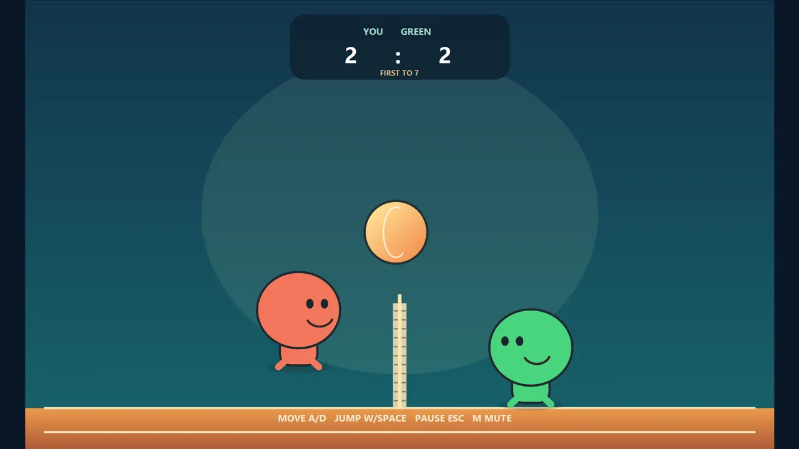
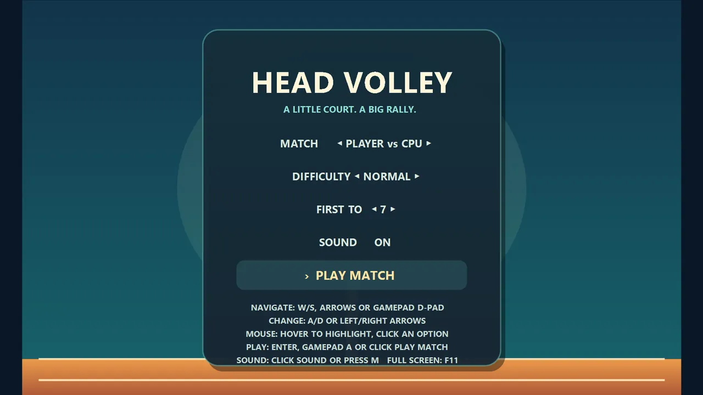
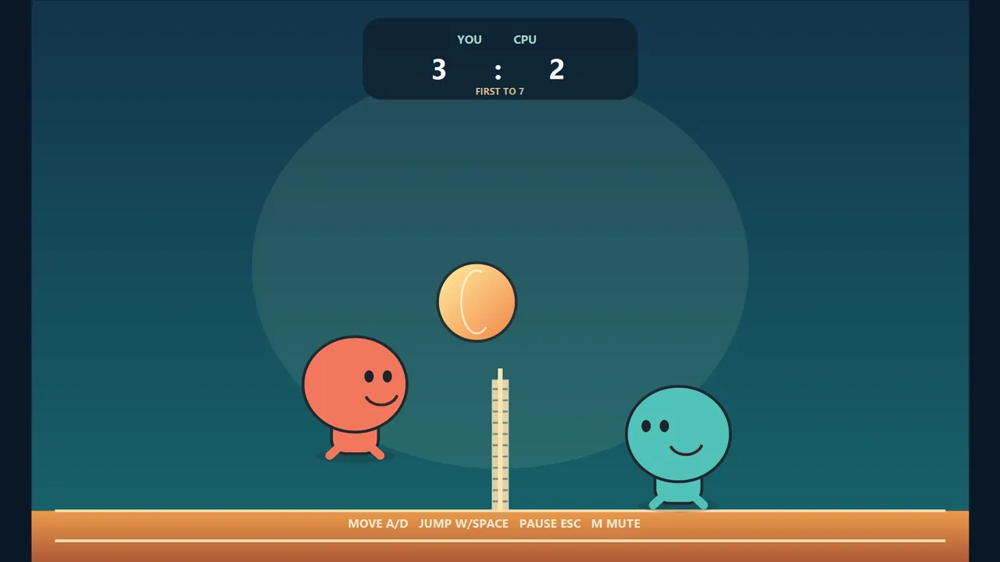
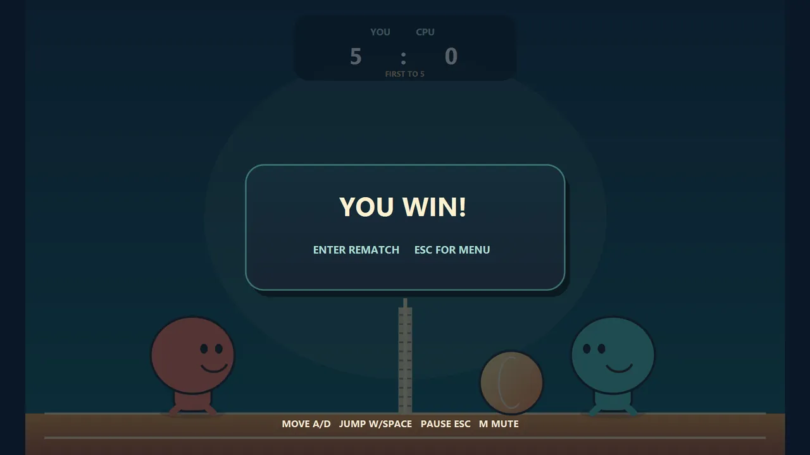
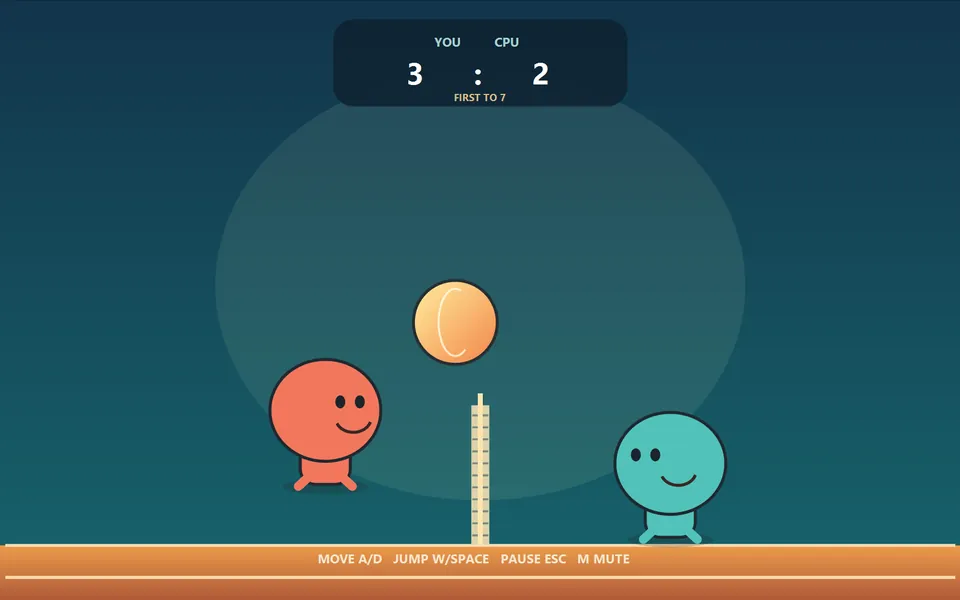

← Volver a todos los proyectos
Juego · En línea
Blobheads Voleyball Arcade
Blobheads Voleyball Arcade es una versión reimaginada del voleibol arcade. Juega contra el ordenador, comparte teclado con un amigo en modo local para dos jugadores o sigue el torneo de cuatro rondas Verde, Amarillo, Naranja y Rojo.
Para quién es: Para quien disfruta de partidos rápidos, contra el ordenador o un amigo en el mismo teclado.
Qué hace
- Una versión reimaginada del voleibol arcade
- Partidos contra el ordenador o contra un amigo en el mismo teclado
- Torneo de cuatro rondas Verde, Amarillo, Naranja y Rojo
- Compatible con teclado, ratón y mando
Capturas de pantalla




